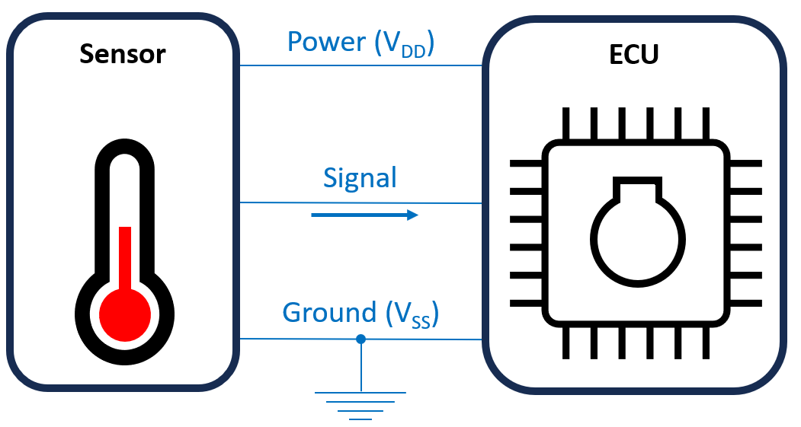
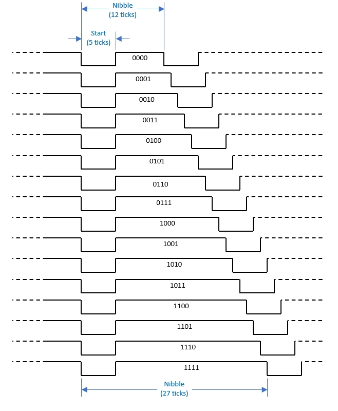
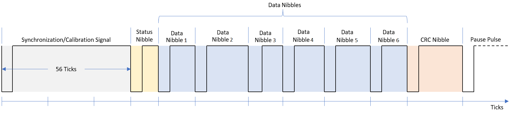
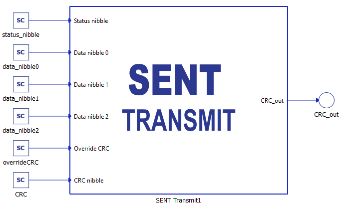

SENT protocol
Description of the SENT protocol and its implementation in the Typhoon HIL toolchain.
SENT Protocol introduction
The Single Edge Nibble Transmission (SENT) protocol is a unidirectional, single-wire communication method defined by the SAE J2716 standard, “SENT – Single-Edge Nibble Transmission for Automotive Applications.” It is intended for point-to-point transfer of signal values, using a pulse-timing scheme based on measuring the intervals between successive falling edges, as shown in Figure 1 and Figure 2.

To enable this communication, the protocol relies on the concept of a tick, the fundamental time unit used for encoding and decoding data. Each data nibble (4 bits) is represented by a pulse width, with a fixed low time and a variable pulse length that encodes the nibble value. Different pulse lengths correspond to different nibble values, where one data nibble can represent numbers in the range 0–15.

SENT message frame structure
- Sync/Calibration pulse
- First pulse in every SENT message.
- According to the SAE J2716 protocol, it has a fixed nominal width of 56 tick.
- Provides the time reference for decoding the rest of the message.
- Status (Communication) nibble
- Often referred to as the status nibble, message ID, or communication nibble.
- Data nibbles
- One nibble corresponds to 4 bits of information.
- Each nibble is encoded as a pulse width in the range of 12 to 27 ticks.
- The interval between consecutive falling edges is defined as (nibble value + 12) × tick.
- CRC nibble
- One nibble represents 4 bits of information.
- Determined by data nibbles.
- Pause pulse (optional)
- Time between falling edge of last transmitted nibble in message and falling edge of next sync message.
- Encoded as a pulse but not a nibble.

SENT protocol in Typhoon HIL toolchain
Currently, SENT Transmit functionality in Typhoon HIL is implemented through the ACE board (Automotive Communication Extender). The HIL device is connected to the ACE board through an Ethernet connection, while the SENT protocol itself is implemented using the GPIO pins on the ACE board (described in Automotive Communication Extender card pinouts).
ACE SENT Setup

The ACE SENT setup component is shown in Figure 4. It is used for configuring the SENT controllers located on the Automotive Communication Extender (ACE). Each ACE device has 8 SENT controllers.
- Device ID
- Choose the Device ID corresponding to the ACE board for which the settings apply.
- Ethernet port
- Choose the Ethernet port to which the ACE board is connected.
- Execution rate
- Signal processing execution rate. Execution rate must match with the other components used in the model.
- Status output on all ACE Setup components indicates:
- Backward compatibility - During the configuration phase of the ACE card,
a backward compatibility check is executed to validate if the
firmware of the ACE card and the firmware of the HIL setup are in agreement.
Depending on the validity of the two firmwares, the first two bits of the status
output are set/reset.
- xxxx xxx1 - Valid firmwares on both THCC (Typhoon HIL Control Center) and ACE side.
- xxxx xx1x - Firmware on either ACE or HIL is not valid. Update THCC and ACE firmware version.
- Configuration errors - If configuration of some of the ACE
protocols is not applied successfully, the corresponding bit will be
set.
- xxxx x1xx - CAN protocol is not configured properly.
- xxxx 1xxx - SPI protocol is not configured properly.
- xxx1 xxxx - LIN protocol is not configured properly.
- xx1x xxxx - SENT protocol is not configured properly.
- If any available protocol reports a configuration error, simply reboot the ACE card and reload the SCADA simulation.
- Backward compatibility - During the configuration phase of the ACE card,
a backward compatibility check is executed to validate if the
firmware of the ACE card and the firmware of the HIL setup are in agreement.
Depending on the validity of the two firmwares, the first two bits of the status
output are set/reset.
SENT Transmit

The SENT Transmit component implements the transmission of the SENT protocol. This component is used to configure the SENT Transmit parameters as described in the SENT Protocol introduction.
- SENT controller
- If an ACE SENT Setup component is not present in the schematic, the default SENT controller is not set.
- Define the SENT controller to be used. It is visible as a combo box, allowing selection of ACEx-SENTy (where x is the SENT controller serial number and y is the selected Device ID of the ACE board).
- Ticks [us]
- Defines the tick length in microseconds. The minimum value is 2.5 µs and the maximum is 90 µs, with a step of 0.25 µs.
- Data nibble count
- Defines number of data nibbles. It can be number between 1 and 6.
- Low pulse [ticks]
- Defines the length of the low pulse in ticks. The minimum value is 1 µs, the maximum value is 11 µs, with a step of 1 µs.
- Low pulse mode
- Defines whether the Low pulse [ticks] is fixed or
variable.
- If the mode is fixed, the low pulse value is predefined as specified in the Low pulse [ticks] field.
- If the mode is variable, a port is created to allow dynamic adjustment.
- Defines whether the Low pulse [ticks] is fixed or
variable.
- Sync pulse [ticks]
- Defines the length of the sync pulse in ticks. The minimum value is 12 µs with a step of 1 µs.
- Pause pulse [ticks]
- Defines the length of the pause pulse in ticks.
- Pause pulse mode
- Defines whether the Pause pulse [ticks] is off, fixed or
variable.
- If the mode is off, the pause pulse is not included in the SENT frame.
- If the mode is fixed, the pause pulse value is predefined as specified in the Pause pulse [ticks] field
- If the mode is variable, a port is created to allow dynamic adjustment.
- Defines whether the Pause pulse [ticks] is off, fixed or
variable.
- Execution rate
- Signal Processing execution rate.
SENT Transmit example
This example illustrates the SENT Transmit component with the following input ports: Status nibble, three Data nibbles, Override CRC, and CRC nibble. The CRC is calculated according to the SAE J2716 protocol, however, if the value in Override CRC exceeds 0.5, the value from the CRC port is transmitted instead. The CRC out port displays the CRC that is forwarded.
